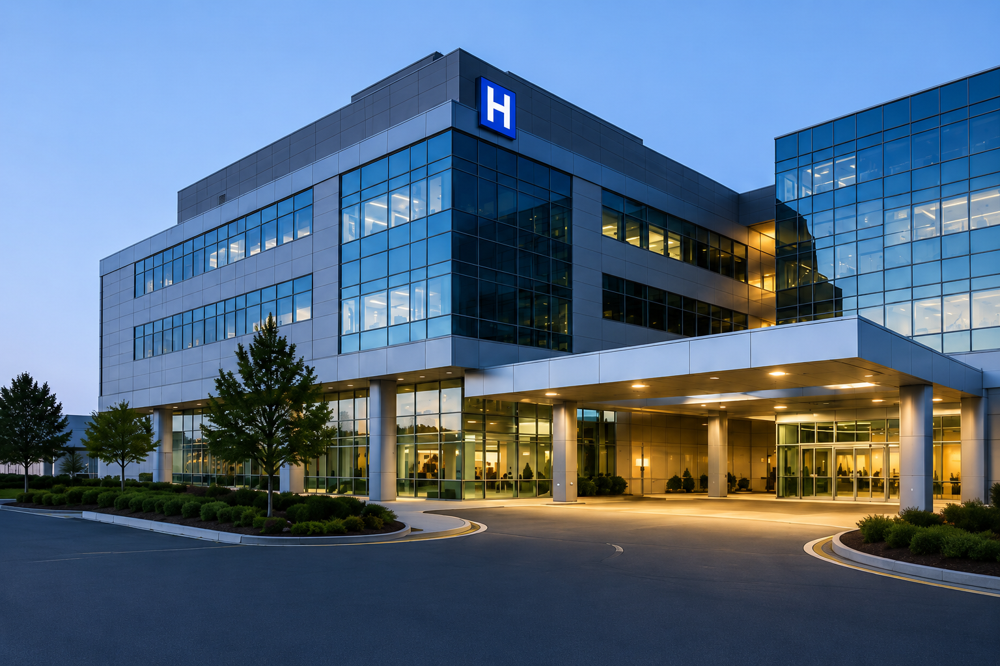

Strategic solutions for healthcare organizations seeking operational excellence.
LMV Healthcare Solutions partners with healthcare leaders to strengthen operations, improve performance, and build sustainable strategies that support long-term organizational success. Our services are designed to help healthcare organizations navigate complexity, optimize resources, and deliver exceptional patient outcomes.
Healthcare Operations & Performance
Evaluate workflows, improve operational efficiency, strengthen team performance, and identify opportunities that support sustainable organizational growth.
Learn More →Pharmacy & Clinical Services Leadership
Support hospital and pharmacy leaders with strategic guidance, service optimization, quality initiatives, and operational planning that enhance patient care.
Learn More →Regulatory Readiness & Quality Improvement
Prepare for surveys, strengthen organizational readiness, improve quality programs, and build systems that support excellence across healthcare settings.
Learn More →Supporting healthcare organizations across critical care settings.
LMV Healthcare Solutions works with healthcare organizations that are committed to operational excellence, quality improvement, and delivering exceptional patient care. Our expertise is focused on three key sectors of the healthcare industry.

Hospitals
Partnering with hospital leaders to strengthen operations, improve performance, support quality initiatives, and enhance patient-centered care across complex healthcare environments.

Hospital Pharmacies
Supporting pharmacy departments through operational optimization, leadership development, regulatory readiness, medication safety initiatives, and service excellence.

Long-Term Care Facilities
Helping long-term care organizations improve care delivery, strengthen organizational processes, prepare for surveys, and create sustainable systems that support resident well-being.
Helping healthcare organizations navigate change with confidence.
Healthcare is evolving faster than ever. From workforce challenges and financial pressures to rising patient expectations and rapidly changing care models, healthcare organizations are being asked to do more while maintaining exceptional standards of care.
LMV Healthcare Solutions was created to help organizations move forward with clarity and purpose. We work alongside healthcare leaders to identify opportunities, overcome operational barriers, and build sustainable strategies that support long-term success.
Our focus extends beyond solving immediate challenges. We help organizations strengthen the foundation needed for growth, innovation, and lasting impact while keeping patients, caregivers, and communities at the center of every decision.
Whether supporting hospitals, hospital pharmacies, or long-term care facilities, LMV brings a collaborative, forward-thinking approach designed to help organizations adapt, thrive, and confidently prepare for the future of healthcare.
Abdel Bello
Abdel Bello, PharmD, BCPS, BCCCP, is a healthcare and pharmacy executive with more than 10 years of leadership experience across hospitals, health systems, and long-term care organizations.
Throughout his career, he has held senior operational, clinical, and management roles, leading pharmacy services, regulatory readiness initiatives, patient safety programs, and multidisciplinary healthcare teams within some of the nation’s leading healthcare institutions.
Combining deep clinical expertise with strategic operational insight, Abdel partners with healthcare organizations to improve efficiency, strengthen compliance, optimize pharmacy operations, and support sustainable growth while maintaining the highest standards of patient care.
Healthcare insights for today's leaders.
Explore practical perspectives on healthcare leadership, artificial intelligence, digital transformation, and operational excellence shaping the future of healthcare organizations.
How Artificial Intelligence Is Reshaping Modern Healthcare Operations
Discover how AI is helping healthcare organizations improve workflows, support clinical decision-making, reduce administrative burden, and enhance patient outcomes.
Building Future-Ready Healthcare Organizations Through Digital Innovation
Learn how hospitals and healthcare leaders are embracing digital technologies to improve efficiency, strengthen collaboration, and deliver better patient care.
Leading Healthcare Teams Through Change and Operational Growth
Practical leadership strategies for healthcare executives seeking to improve organizational performance while preparing for the future of modern healthcare.
Ready to strengthen your healthcare organization?
Let’s discuss how LMV can support your next stage of improvement.